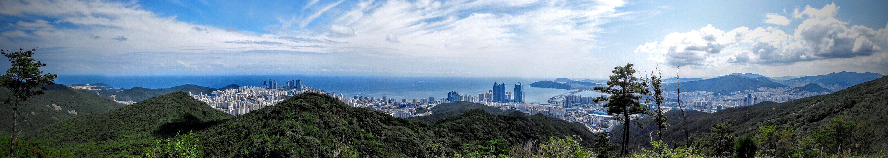

안녕하세요. 핏짜 김진모입니다.
저는 2012년 초, 40대로 접어들며 거의 경험이 없던 등산을 시작하였습니다. 나이를 굳이 밝히는 이유는 유독 40대에 접어드는 많은 분들이 등산이라는 힘든(?) 운동을 시작하기에 스스로의 나이가 너무 많고 신체적으로 노쇠 했다는 괜한 우려를 하시기 때문입니다.
저 역시 40대 이전까지는 등산에 대하여 관심도 전혀 없었고 경험도 극히 적었었습니다. 하지만 등산을 즐기다 보니 금주도 하게 되고 육체적으로는 물론 정신적으로도 더욱 건강해 졌습니다. 등산을 즐김으로 인해 ‘난 어제보다 오늘이 더 건강하다.’는 것을 매일같이 느끼며 감사하고 있습니다. 그러니 저보다 젊으시거나 혹은 연세가 조금 더 나가신다고 하더라도 스스로 부정적인 생각을 마시고 보다 건강한 내일을 위해 등산을 즐겨 보시기를 권해드립니다.
저의 등산의 첫 목적은 그 어떤 즐거움을 찾는 것이 아니라 당시 100kg이 넘던 몸무게(키 184cm)를 줄이기 위한 다이어트였습니다. 등산 초기에는 적지 않은 나이와 과체중으로 인한 부상의 우려로 걱정을 하였으며 항상 '어떻게 해야 부상없이 잘 다닐 수 있을까?'란 생각을 하며 다녔습니다. 덕분에 많은 공부와 다양한 실험을 통해 저 나름대로의 보법, 호흡법, 스트레칭 등 등산 중은 물론 등산 전후의 관리 방법을 완성하였습니다.(완성하였다고 이야기 하지만 지금도 보다 더 나은 방법을 찾기 위해 항상 노력을 하고 있습니다.)
등산을 하면 ‘무릎이 망가진다’는 이야기는 그냥 괴담으로 치부하기에는 너무나 많은 분들이 겪는 심각한 문제입니다. 또한 등산을 즐길수록 건강해지기보다 손 저림, 몸살, 감기, 저혈당 혹은 근육이나 관절, 인대의 통증 등 원치 않는 증상을 경험하거나 족저근막염, 장경인대염과 같은 치료가 어려운 질병을 겪게 되기도 합니다.
특히 무엇보다 안타까운 것은 이러한 부상으로 인하여 등산을 멀리하게 되는 경우가 너무나 많다는 것입니다. 그리고 그러한 경우를 알게 되었을 때 저의 경험을 일찍 나누었으면 조금이라도 도움이 되지 않았을까 하는 아쉬움입니다.
또한 앞서 이야기한 증상들에 대해서도 본 문서를 통해 이해하고 예방할 수 있는 계기가 되었으면 합니다.
저는 어릴 때 운동을 좋아하던 사람도 아니었고 오히려 지극히 운동을 싫어하던 사람이었습니다. 오죽하면 한참 젊은 시절인 30대 초중반에 몸무게가 130kg이상 이었겠습니까? 비록 적지 않은 나이였지만 다이어트를 결심하고 행하여 몸무게를 줄였습니다.(본 문서의 다이어트편에 후기가 있습니다.)
그리고 지금은 외모로 평가하면 배 나온 아저씨와 같은 몸매로 그다지 등산과 어울리지 않은 것같은 모습이지만 수 년 동안 매년 2,000km 이상의 산행을 꾸준히 하면서도 무릎이 아프거나 하여 ‘파스’ 한 번 발라 보지 않았습니다.(등산을 시작한지 1년쯤 되었을 때 장경인대염을 경험한 적이 있으나 스트레칭만으로 2개월 정도의 단기간에 완치한 적이 있으며 이 외에는 등산으로 인해 치료를 해야할 어떠한 부상도 경험하지 않았습니다.)
저는 특별히 건강하고 튼튼한 사람만이 꾸준히 등산을 즐길 수 있다고 생각하지 않습니다. 누구나 저처럼 장거리 산행을 즐겨하더라도 등산에 대한 바른 마음가짐과 제대로 된 스트레칭, 보행법, 호흡법 등을 익히기 위해 꾸준히 노력해 나가신다면 얼마든지 부상없이 건강한 등산 생활을 계속하실 수 있다고 생각합니다.
그리고 제가 공부하고 경험했던 내용을 보다 이해하기 쉽게 정리한 본 문서가 그러한 역할의 많은 부분을 담당하리라 희망하고 그럴 것입니다.
또한 이처럼 제가 염려하며 공부하고 체득했던 무릎 부상 등을 방지할 수 있는 충격을 적게 걷는 보행법과 스트레칭은 등산은 물론 일상 생활에서도 충분히 효과적입니다. 이러한 보행법과 스트레칭은 스스로 자신의 신체에 더욱 많은 관심을 갖게 할 것이며 더욱 건강하게 할 것입니다. 보다 많은 분들이 함께 건강할 수 있도록 주위분들에게 많이 알려주시면 감사하겠습니다.
PS> 2014년 4월에 올린 ‘핏짜레칭’의 경우 해보지도 않은 사람들에 의해 효과가 없다거나 오히려 몸에 해롭다는 등 강도 높은 비난을 받았습니다. 누군가는 의사도 아닌 당신이 올린 글은 믿을 수 없다고 하고 누군가는 의사인 친구가 안좋다고 하더라는 확인할 수 없는 글로 저를 비난하기도 하였습니다. 하지만 시간이 흐른 지금에는 직접 해보신 분들의 소중한 경험들로 그 효과가 인정받고 있으며 많은 분들에게 다시 전파되고 있습니다. 또한 저에게 감사의 인사를 전해 오시는 분들도 많아졌습니다.
드리고 싶은 말씀은 제가 제안해 드리는 내용들이 생소하고 의심이 갈 수는 있으나 분명 많은 경험과 공부를 통해 이루어진 결과물들입니다. 무작정 옳다고 생각하고 따라하실 필요는 없고 그렇게 해서도 안되겠지만 적어도 수 차례는 인내심을 가지고 직접 경험해 보시기 바랍니다.
그러면 여러분 스스로도 놀랄 정도의 일들이 벌어질지도 모릅니다.
부산오산종주 65km, 24시간 이내의 당일 종주 산행이 여러분 스스로에게 불가능하다고 생각하시나요? 절대로 그렇지 않을 것입니다.
물론 꼭 부산오산종주를 완주해야 하는 것은 아닙니다.^^